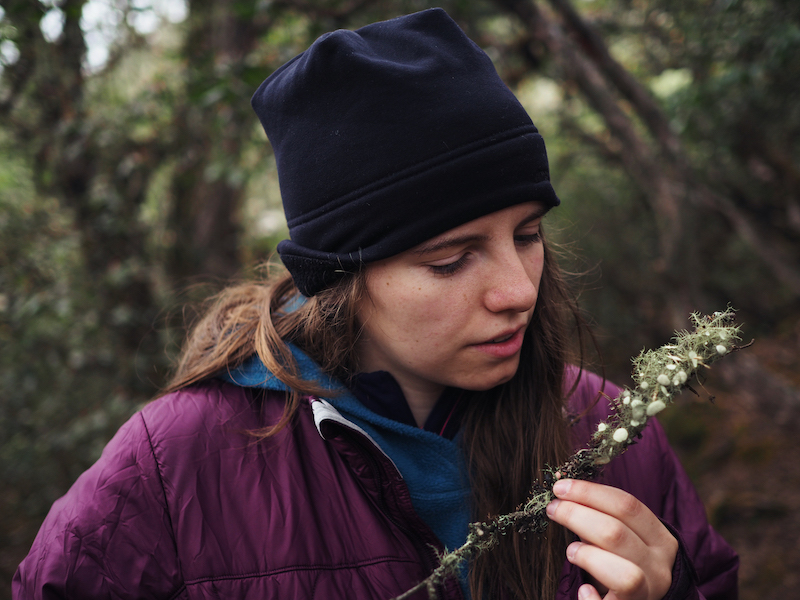
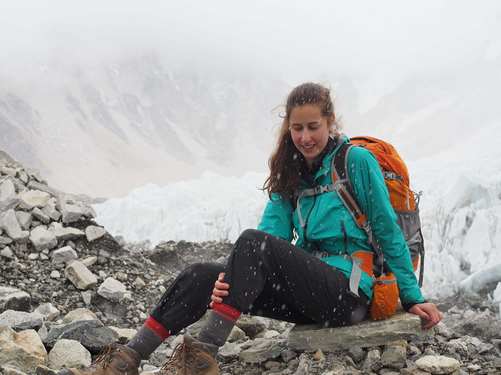
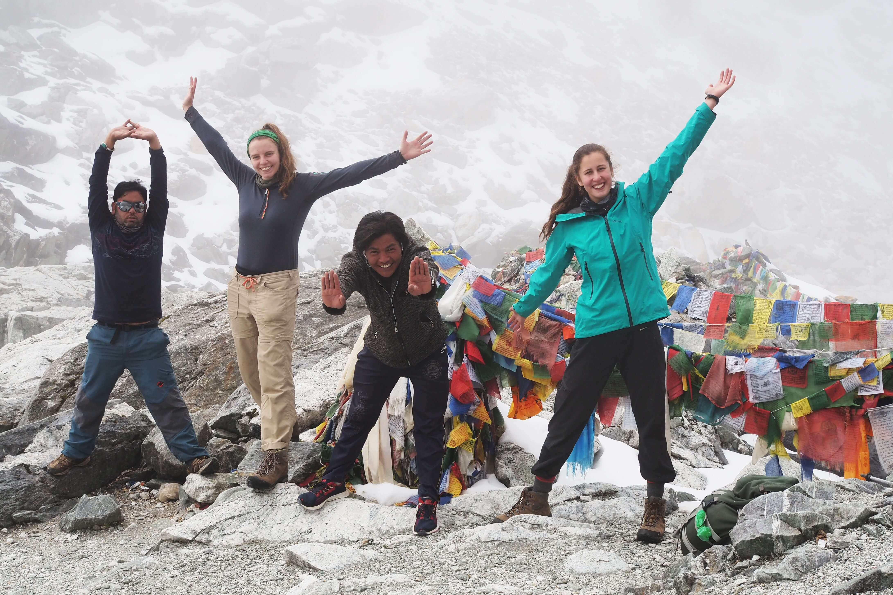
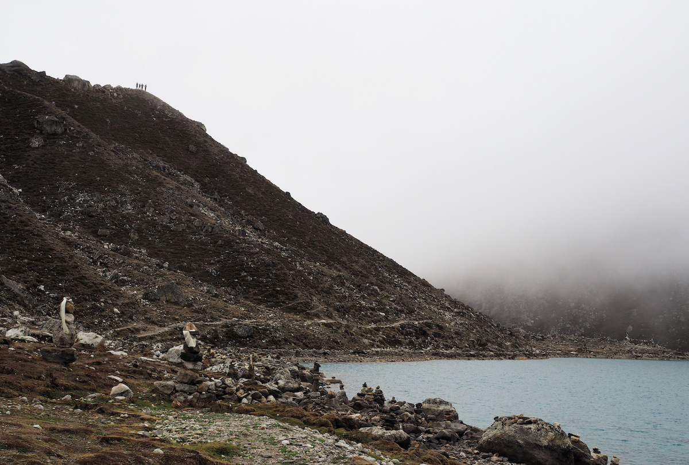
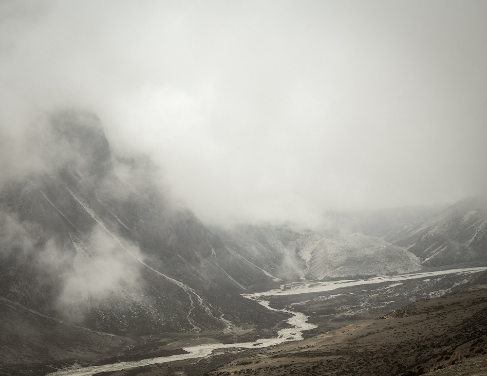

Hiking in the Himalayas
May 27 to June 14, 2018


DAY 9 — Dingboche
The winding trail first led us through a misty rhododendron forest filled with white, yellow and pink flowers. We walked along a sand-like path which absorbed the sounds of our footsteps, engulfing us in a profound silence until we reached a metal suspension bridge filled with prayer flags.

रेशम फिरिरी रेशम फिरिरी,
उडेर जाउँ कि डाँडामा भन्ज्यांग,
रेशम फिरिरी

Everest Base Camp

DAY 15 - Dzongla to Dragnag
A relaxed hike across a field with boulders, a stream and a magnificent view of the mostly cloud-covered mountains led us to the Cho La Pass this morning. This steep mountain face took us an hour and a half to scramble up and the top greeted us with a massive glacier. To get to the ice, we first had to walk along a slush-covered path on the mountain-side - the path measuring no more than 10cm in width.
All around us echoed the sounds of landslides, and only once on the glacier and its freshly fallen snow were we out of the avalanche-risk zone. The empty white field abruptly ended several kilometres later in a towering wall of boulders which we climbed. Once at the top of the Cho La Pass, my trekking partners and I had lunch amongst the prayer flags and the misty void at 5,420 meters

DAY 16 - Gokyo
The stone-covered hills of ice rumbled and creaked in our presence, and the constant sounds of landslides encircling us kept us at a steady and fast pace on our hike today from Dragnag to Gokyo. On the final mount from Ngozumba Glacier, I sat and listened to the chattering of ice, and watched the alien-like desert of rocks in awe. Over the tundra lay the holy emerald-green Gokyo lake. Once in the village, we hiked around the vast body of water, and on the opposite side of the lake, we ran through a lumpy moss and grass field filled with yaks while leaping over creeks.


Nepali Basics
Dhanyavada: thank you
Krpaya: please
Pani: water
Ramro: good
Tato: hot
Chiso: cold
Dherai mitho chha: very delicious
Suba ratri: goodnight
Himal: mountain
Thakai: tired
Bistari: slowly
Jamjam: hurry
Chayna: no / I don’t have
Ukusmukus: paralysis from overeating

Medication for high altitude:
Diamox 50mg/day to treat altitude sickness, works by acidifying the blood and consequently increasing the respiratory rate;
Decadron to stabilize High Altitude Cerebral Edema emergencies;
Sildenafil to reduce pulmonary pressure in order to stabilize High Altitude Pulmonary Edema emergencies - works by causing pulmonary vasodilation.

DAY 24 - Kathmandu
I got a tour of Kathmandu today on the back of my friend Bhabi's motorbike. We rode through the chaotic traffic to the old Hindu town of Kirtipur and to Barahi Cave. During the latter, we hiked up the side of the mountain on a muddy path to a cliff with two interconnected tunnel holes. Young boys were crawling into one and emerging several minutes later in the other which lay 10 meters below.
Kathmandu's streets are filled with cars, motorcycles, tractors and the occasional lounging cow. Neither street lights nor signs are present, and the chaotically slow-moving traffic honks repetitively. The dirt streets are lined with local stores, vegetable stalls and garbage. Only the motorbike driver wears a helmet, and any other form of protective gear is rarely seen. Women on the back of bikes usually sit sideways in their traditional dresses while cradling a baby.

DAY 30
I went to a heavy metal concert with my Nepalese Couchsurfing host last night and somehow ended up dancing salsa with an Italian guy amid the blaring rock music... what a cultural mixup experience! By 4am we were the only ones still dancing, and as the bar closed, we started walking though the unlit streets to Dubar Square. A group of Nepalese guys in their 20s sat singing and playing the guitar and a cajón between the ancient temples in the otherwise empty city square. We joined the locals who were shocked that I knew the lyrics to the traditional Nepalese song they were playing, Resham Firiri.
As the sun began to rise, the boys scattered into the remaining darkness. The three of us then continued through Dubar Square and observed the 5:30am market unfold. Close to 200 people sat on straw mats behind their vegetables, flowers and clothing which lined the otherwise tourist-less pedestrian streets. Later that morning, I met up with Nina, my traveling partner, and together we strolled through the Garden of Dreams in Thamel. Behind the walls lay a peaceful garden filled with unbelievable stone gazebos, ponds and greenery.